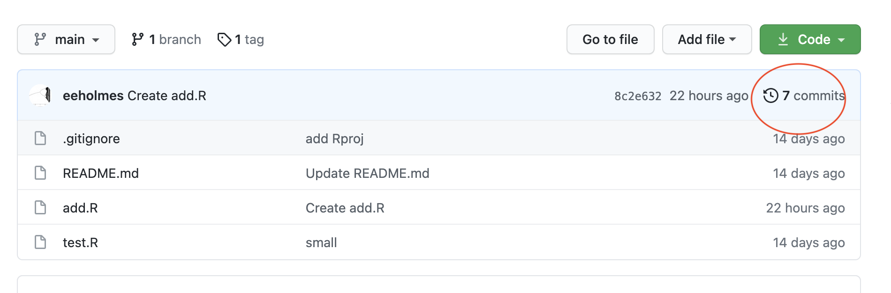
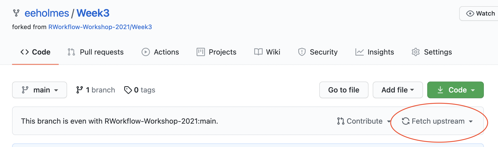

Week 3
Key Git/GitHub Skills
Session questions and comments
Migrating repos
I would like to organize my repositories into organizations. How do I move my repos to my new organization.
There is a migrate button. GitHub does all the work for you.
- Open the repo you want to migrate.
- Go to Settings (cog on right).
- Scroll all the way down to ‘Transfer ownership’. Click on Transfer.
- Look for an email in the email address for the organization. You’ll need to accept the transfer. Note, you can use the same email for all your organizations. It’s really just like repo folders.
- Once the transfer is done, go into Settings for the repo and adjust the membership access as needed. You can add individuals (using their GitHub address) or add teams.
Issues vs discussions
What is the difference between issues and discussions
Discussions happen within an organization and are not specific to a repository. Issues are specific to a particular repository and have features like assigning tasks to specific people and assigning labels.
Find my issues
My team is using issues across a variety of organizations and repositories. How do I find all the issues assigned to me.
- Log into GitHub
- Go to https://github.com/issues/assigned and you’ll see all the issues assigned to you.
GitHub Pages
- How do you decide whether to use a GitHub Pages landing page?
Anything that is for someone other than me has a landing page. This gives someone a readable entry to the repository with instructions for how to use the repository. I always put a link to the landing page in the repo description. Then it appears on the right side of my repo files and is easy to find.
Here are some videos showing how to make a few different simple landing pages from your Readme file or from an RMarkdown file in a docs folder.
Super simple - just your
Readme.mdfileUse a theme - still just your
Readme.mdfile but with a GitHub generated “skin”. My MARSS landing page is generated like this.User an RMarkdown file - from
index.Rmdin adocsfolder. This allows you to combine text and figures generated from R. Here is a real example from one of my colleagues ASSESSOR. It was generated from a singleindex.Rmdfile just like in the video.
Now that you see how landing pages are often generated, if you see a landing page that you like, go to their Readme.md file and see how they wrote it or look for a docs folder and their index.Rmd file.
- Do you use a landing page for a personal-only repo?
If the repo is just for myself, then I will often only have a Readme file. I write this for my ‘future’ self to help me quickly get back into the project at a later date. What I have here is really project dependent. Some things I usually have in the Readme for personal repos are
* If it is an R package, the code to install. I just want to copy and paste this. Saves me time later.
* Basic organization of the repo if it is anything unique or bespoke.
* Where I am at in the project and what the status was when I stopped.RStudio and Git
I want to link RStudio to Git, but I am getting an error that RStudio cannot find Git
Open RStudio. Go to Tools > Global Options… > Git/SVN . The paste in the location of the git.exe file.
On a Mac? location is usr/bin/git
Finding that location if you are on a PC can be onerous. First make sure you can see hidden folders. In a finder window, you click View and make sure the hidden files checkbox is checked. Then here are some ideas of where to find git.exe. Note you might not see .exe . You might only see git. It depends if you have show file endings selected in preferences.
If you only installed GitHub Desktop, look here
C:\Users\UserName\AppData\Local\GitHubDesktop\app-2.8.3\resources\app\git\cmd\git.exeYou have to change app-x.x.x to whatever version you have.
If you installed Git for Windows, look in these places.
C:/Program Files/Git/bin/git.exeIf you installed Git for Windows locally, look here
C:\Users\UserName\AppData\Local\Programs\Git\bin\git.exeFile in use
Can I see when someone is working on a file?
No. You can see when they commit a change and push the file up to GitHub. Click the history link (circled in red belew) on GitHub to see what’s been happening.

Preventing conflicts
How I prevent two people from working on a file at the same time?
In my experience, this is actually less of a problem than you might imagine in small teams. Generally we are dividing up our tasks and work on different parts of a repository. For example, someone is working on data and another on functions to make plots with data and another on prose. Also you can work on the same file as long as you are working on different parts of the file. So if I add documentation to the top and you change code lower down, those changes are not in conflict.
Before embarking on the full-scale solution to this which is using forks (or branches) and pull-requests, I’d try just using old fashioned team communication if your team is small. So message (or email) your 1-3 collaborators when doing something that will conflict. “Hey all, I’m doing that repo reorganization that we talked about. I’ll let you know when I’m done. If you can stay out of the repo until then, that’d be great.”
If that doesn’t work or you’d rather review changes before that are committed to the repository, then use a forking and pull-request workflow (below). I’d steer clear of branches unless you know that’s what you want to do. Forks don’t have the branch dangers that I’ve talked about in lecture.
Forking workflow
Let’s say Org A is where you have a repo that you are working on.
- Fork that to your personal GitHub account. This created a copy of the repo that is linked to the Org A repo.
- Pull the forked repo into your computer.
- Work on the fork, and when you are ready submit a Pull Request (click the button with that name). It is fairly self-explanatory once you click on Pull Request.

- Then over in the Org A repo, you’ll see a Pull Request. They owner will also get an email. You can review and merge (if you want).
- Keep your fork up to date with Org A repo using the Fetch Upstream link
